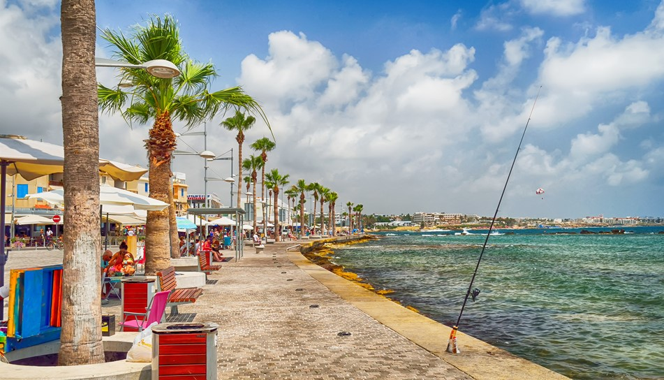
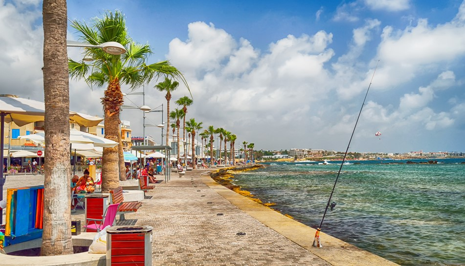

Call for Proposals in Research Demo Sessions (RDS) and Late Breaking Results
The IEEE
Computer Society Annual Symposium on VLSI invites authors to submit research
demonstration proposals to the Research Demo Session (RDS). In the RDS, authors can
present live demonstrations and hardware prototypes of their research papers and
projects. The research demo submission should be a short paper between one to two pages,
written with the IEEE template in double column format, and must contain the following
information:
- Title, Authors and Affiliations
- Abstract
- Introduction and Motivation
- Proposed Design including experiment results
- Conclusions/References
The
submission needs to be done using the online system, and they will be reviewed. The
accepted submissions will be published in the proceedings in a special track. The idea
is the following: it is a paper, but the form of presentation is not oral, not poster,
but demo. A best research demo award will be given based on the quality of the research,
demo, and the presentation, and it will be presented during the conference banquet.
The conference is also accepting papers on the latest novel results relevant to the technical areas of this conference. The deadline for Late Breaking Results technical papers is May 6th, 2022. All such papers should be submitted to the Late Breaking Results track. When submitting, indicate, as a keyword, the topic area addressed by referring to one of the track designations as listed in the original call for papers. All submissions will be rigorously peer reviewed. The manuscript as a single PDF up to 4 pages is to be submitted online at https://edas.info/index.php?c=29107
For additional information, please
contact:

 
